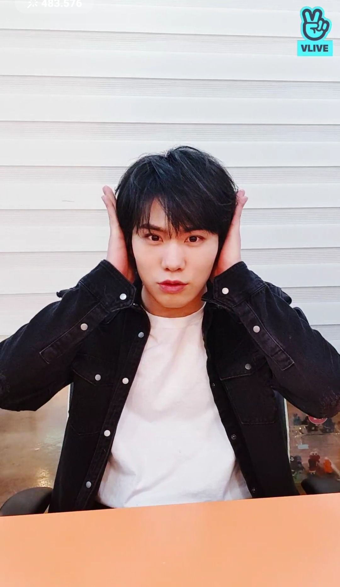

Astro Members Profile of Fantiago Shows
Cha Eunwoo

- Birth Name: Lee Dong Min
- Stage Name: Cha Eunwoo
- Position: Vocalist, Visual
- Birthday: March 30th, 1997
- Blood Type: B
Eunwoo was born in Gunpo, Gyeonggi, South Korea. He has a younger brother who is studying in China. He is considered as a morning bird since he always wake up early and wake the rest of the members up. As the visual of the group, he is so handsome that people starts calling him “Face Genius”, which is someone who is crazily so handsome. His nickname “White Tee Guy”, because he always wore white t-shirts during Breathless era. He said if he could not be a singer, he wanted to be a teacher, docter, or maybe an anchor.
Astro Members Profile of Fantiago Shows
Rocky
- Birth Name: Park Min-hyuk
- Stage Name: Rocky
- Position: Main Dancer, Lead Rapper, Vocalist
- Birthday: February 25th, 1999
- Blood Type: O
Rocky was born in Jinju, South Korea. Being so talented in dancing, the Fantagio staff began to call him “Dancing Machine”. The other Astro members described him as a quiet, very reliable and hardworking person.He was the first trainee who was officially introduced with Photo Test Cut. He said that if he could not be a singer, he wanted to be a dance teacher. Not only talented in dancing, Rocky is also talented in Taekwondo, he now holds the black belt now. It is also revealed that he has a very big appetite. He loves cooking, so the other Astro members often call him Chef Minhyuk.
Astro Members Profile of Fantiago Shows
Jinjin
- Birth Name: Park Jin Woo
- Stage Name: JinJin
- Position: Leader, Main Rapper
- Birthday: March 15th, 1996
- Blood Type: A
JinJin was born in Ilsan, Gyeonggi-do, South Korea. Being a native Korean speaker, he is not only fluent in his mother language, but also in English and can speak a little Chinese. Among all Astro members, he and Eunwoo are the best English speaker. He is often called the Slow Rapper, because he taks very slow. He attended Hanlim Multi Arts High School and NY Dance Academy in Ilsan, before finally joining Fandagio as a trainee.
Astro Members Profile of Fantiago Shows
Moonbin
- Birth Name: Moon Bin
- Stage Name: Moonbin
- Position: Lead Vocalist, Lead Dancer
- Birthday: January 26th, 1998
- Blood Type: B
Moonbin was born in Cheongju, South Korea. He has a younger sister named Moon Soo A, who is a trainee in YG Entertainment, a home for several well-known boy and girl groups like PRISTIN and iKON. When he was younger, he used to be a child model and actor. He used to be Samsung’s model in his childhood. In 2009, he appeared in drama “Boys Over Flower” as the young So Yijeong, who was portrayed by Kimbum. And then in 2012, he enterd Fantagio iTeen’s Audition.
Astro Members Profile of Fantiago Shows
Sanha
- Birth Name: Yoon San-ha
- tage Name: Sanha
- Position: Vocalist, Maknae
- Birthday: March 21th, 2000
- Blood Type: AB
Sanha was born in Seoul, South Korea to a Christian family. He has three older brothers. Being the youngest in the family, Sanha really likes to bully his hyung a lot. Since he was younger, he was already into music. He learned to play guitar from his father and brothers. Then, he attended A-Sound Music Academy, and studied vocal. But however, he also managed to master guitar in only 8 months. He said if he was not a Kpop singer, he wanted to be guitarist.
Astro Members Profile of Fantiago Shows
MJ

- Birth Name: Kim Myung Jun
- Stage Name: MJ
- Position: Main Vocalist
- Birthday: March 5th, 1994
- Blood Type: O
MJ was born in Suwon, Gyeonggi, South Korea. Before joining Fantagio, he went to JPY Entertainment audition, and got one year scholarship from Seoul National University. JPY Entertainment is a home for numorous famous idols like Stray Kids, and Day6. And then, he appeared in Fantagio Web Drama entitled “To Be Continued” in 2015.